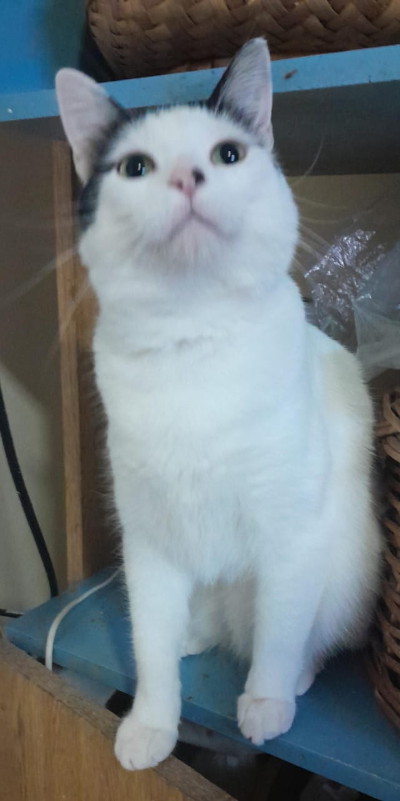
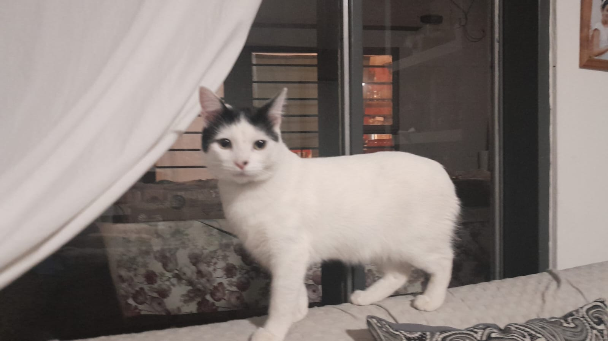
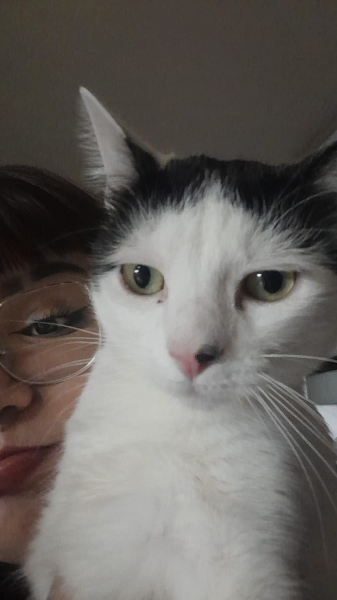
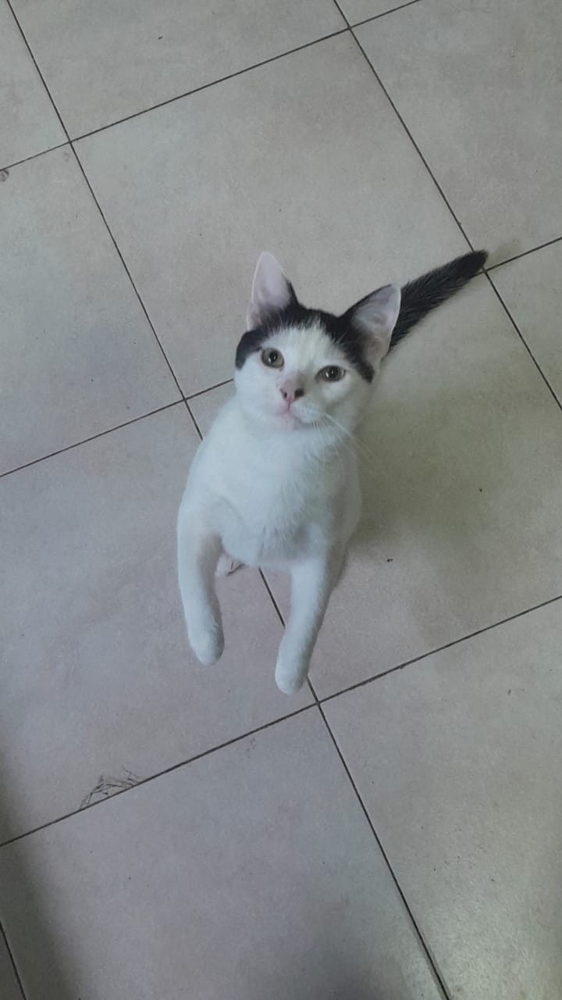
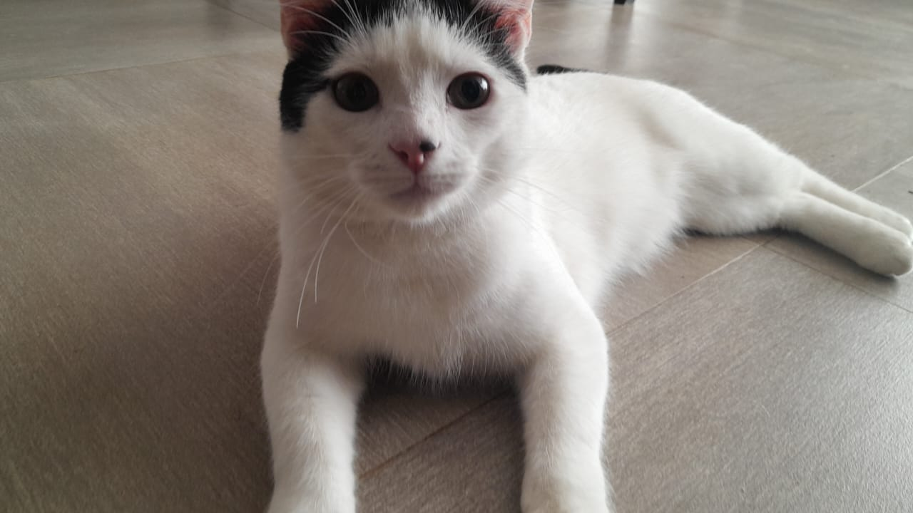
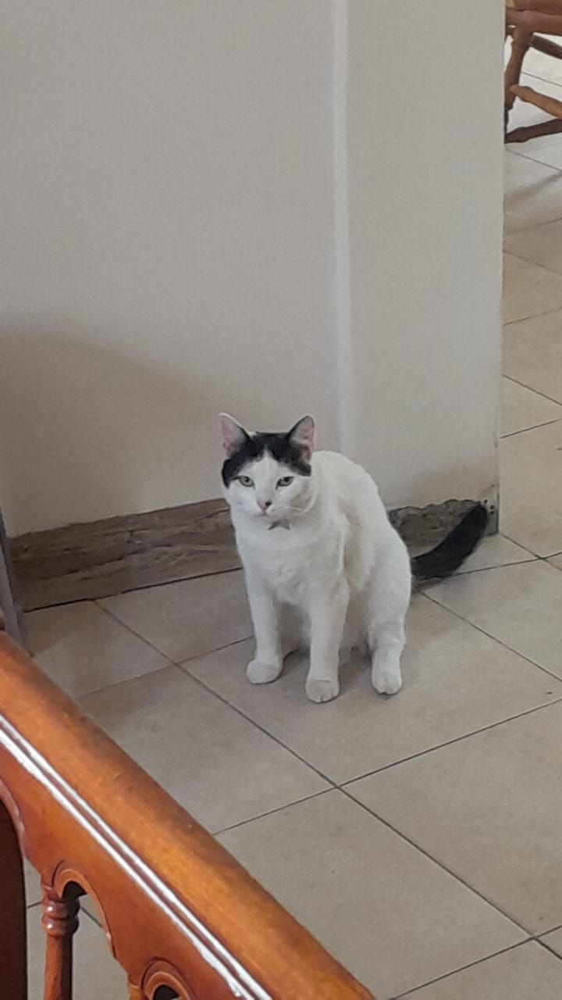
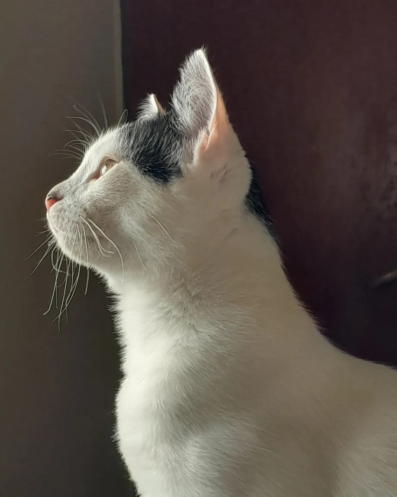
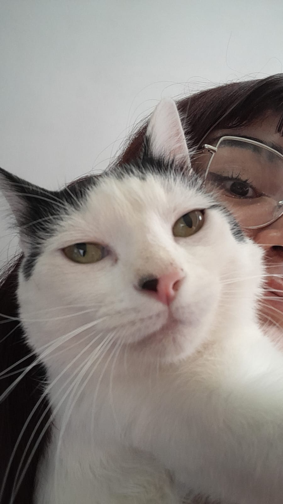
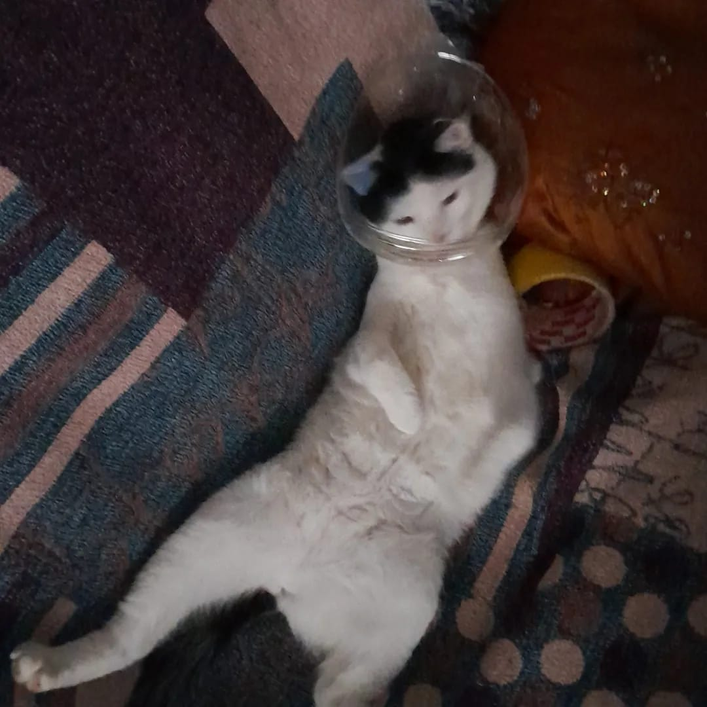

Mi gato "Milo"
Este es mi gato milo.Me acompaña cuando estudio,almuerzo o duermo estamos juntos todos los dias Es un personaje: juega, corre, y después se tira como si hubiera corrido una maratón. No importa lo que pase, verlo así me alegra el día aunque muchas veces me haga enojar :).














